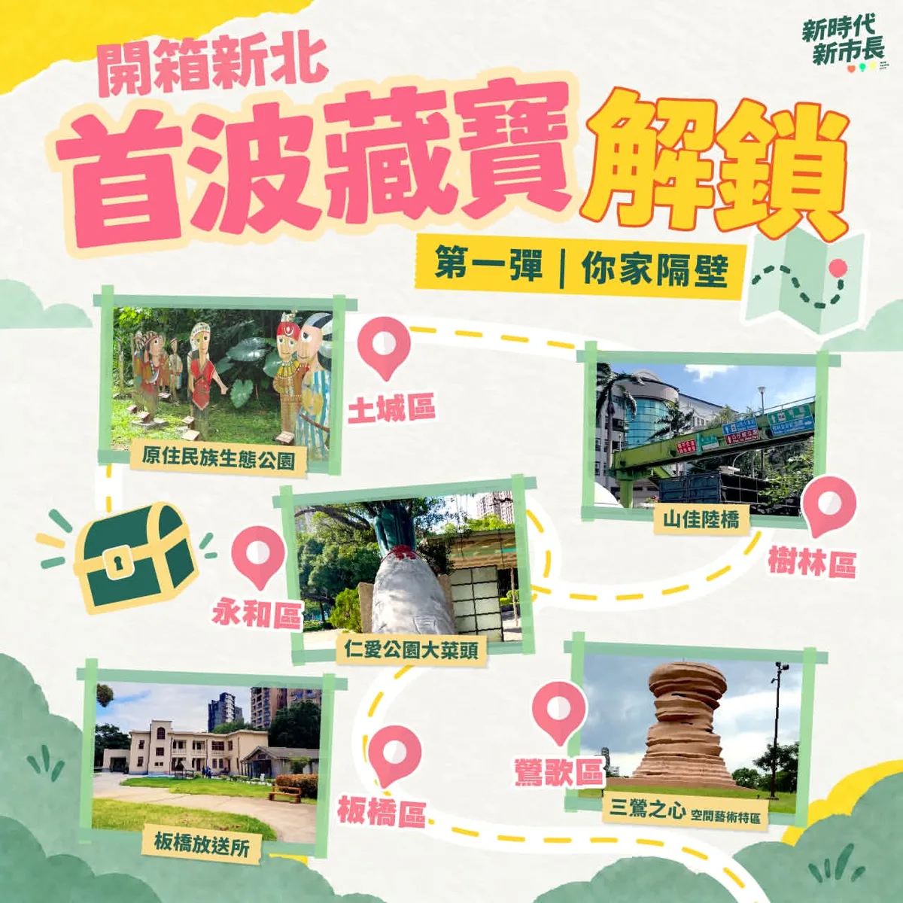
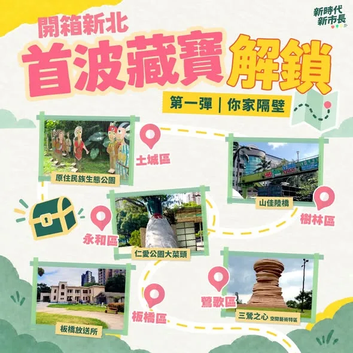

蘇巧慧chiaohui.su

巧慧的 #山友後援會 正式成立！ 新北有最豐富的山林和海洋資源，未來我會為新北的山林步道 #分級分眾，增加大眾運輸班次， #縮短大眾登山轉乘的時間；同時將登山活動與老街商圈、歷史人文景點共同串聯，結合登山也 #振興地方商圈。最後，我也會 #打造山林教育中心，作為山友的集訓場地，真正向山致敬。 未來我擔任市長，會從各方面縮短交通接駁、升級硬體設施，打造「新北大縱走」品牌，讓台灣的孩子越來越喜歡山，越來越懂得敬山，越來越親近山！
Accounts
| 平台 | 帳號 | 已收錄貼文 | 最後更新 |
|---|---|---|---|
| 官網 | https://chiao.tw/ | 35 | 2026-09-17 00:00 |
| https://www.facebook.com/chiaohui.su | 119 | 2026-09-17 21:30 | |
| https://www.instagram.com/su.chiaohui/ | 151 | 2026-09-17 16:42 | |
| YouTube | https://www.youtube.com/channel/UCBybqVtDU2YgADc8tBqUz5A | 83 | 2026-09-17 21:20 |
| LINE 官方帳號 | http://line.me/ti/p/%40suchiaohui | 0 | — |
| Threads | https://www.threads.com/@su.chiaohui | 177 | 2026-09-17 21:22 |
| Podcast | https://open.spotify.com/show/06fXdjNXspAe1QLML8EsAv | 8 | 2026-09-17 15:00 |
Timeline
顯示 573 / 573 則
巧慧的 #山友後援會 正式成立！ 新北有最豐富的山林和海洋資源，未來我會為新北的山林步道 #分級分眾，增加大眾運輸班次， #縮短大眾登山轉乘的時間；同時將登山活動與老街商圈、歷史人文景點共同串聯，結合登山也 #振興地方商圈。最後，我也會 #打造山林教育中心，作為山友的集訓場地，真正向山致敬。 未來我擔任市長，會從各方面縮短交通接駁、升級硬體設施，打造「新北大縱走」品牌，讓台灣的孩子越來越喜歡山，越來越懂得敬山，越來越親近山！
@su.chiaohui:海外台商挺巧慧！一起把新北打造成希望之城！ 今天來自世界各地的台商、台僑朋友們齊聚在一起，為我成立「海外台商後援會」，謝謝大家特別回到台灣，在忙碌的行程中撥出時間為我加油！ 未來，我要讓新北變得有趣、友善、有機會！讓更多的海外青年看見新北的山海與地方的故事，並且在這裡找到好的工作、創業與投資的機會，將新北市打造成聯結世界的起點！ 我會繼續努力，讓台灣成為大家的底氣，把新北打造成一座海外年輕人願意回來、也能看見未來的希望之城！

@su.chiaohui:【開箱新北第一彈：你家隔壁】解答公布！ 很開心看到大家熱烈參與開箱新北的藏寶計劃！這次我們帶大家走進新北各個角落，也期待透過一個個藏寶點的故事，讓大家認識新北不同地方的特色。 現在就讓我們一起認識第一波藏寶點背後的故事，以及這次合作的創作者，也歡迎跟我分享你答對幾個喔！
【什麼事都不想做的時候，要怎麼讓心情重新好起來呢？】 適讀年齡：3-6歲，有附注音 ✏️ 本集台語小教室 使性地、公園、泅水、電影、看電影 《波波今天鬧彆扭》 文圖／ 娜塔莉亞．莎洛什維利譯／艾可 波波今天對什麼都有意見。他不想去公園玩、不想去游泳、也不想去看電影。波波到底怎麼了？他該怎麼擺脫鬧彆扭的情緒呢？ ＊故事由水滴文化授權使用＊ 👇 繪本這裡看：https://www.books.com.tw/products/0011037668 👇 更多親子大小事，請在 FB 搜尋： 水獺媽媽巧慧與他的好朋友 https://www.facebook.com/ottermamachiao 👇 寫信給水獺媽媽：100925 立法院郵局 第 27 號信箱 水獺媽媽收

@su.chiaohui:新北有山有海、有城市有鄉鎮，而金山正是聚集了新北所有的美好，多元又豐富。前幾天我和 @bikhimhsiao 美琴副總統一起到金山和在地農會、團隊、青年夥伴面對面聊聊對金山未來的想像。 有些人從小在金山長大，有些人是離開之後又回來，有些則是從外地搬來，但大家都在金山找到自己喜歡的生活樣貌，也都希望讓這裡的美，被更多人看見。 我們一起努力，讓新北成為台灣人安居樂業的首選，外國人一生必訪的城市。

@su.chiaohui:中秋連假來三重看大戲！唐美雲歌仔戲團經典大戲《龍鳳情緣》精彩登場！ 就在中秋連假！國寶級歌仔戲天后唐美雲，將與「永遠的娘子」許秀年老師、「百變精靈」小咪老師及唐美雲歌仔戲團的專業演員們，帶來經典戲碼《龍鳳情緣》，透過才子佳人終成眷屬的精彩故事，祝福大家中秋佳節事事圓滿！ 這是《龍鳳情緣》首次在新北戶外公開演出，機會非常難得！邀請大家一起來看戲，歡喜過中秋❤️ 📍中秋戲曲之夜《龍鳳情緣》 時間｜9/27（日）19:00 地點｜三重向日葵廣場（市前街與中正北路交叉口）
板橋市場走透透！一起拚就會贏！ 連續兩天來到板橋 #福德市場、 #黃石市場 和 #國泰市場 掃街，謝謝鄉親們總熱情的為我加油，讓我一大早就充滿能量！ 還有支持者很早就在市場入口等我，甚至把「2026新北慧贏」手搖旗改造成獨一無二的手提袋，看到的時候真的又驚喜、又感動，大家真的都超有創意❤️ 每次走進市場，都能感受到滿滿的人情味，謝謝大家不斷為我打氣，我會繼續努力拚，一起迎接新北新時代！

環境資源 金山聚集了新北所有的美好 Ft. 蕭美琴副總統 前幾天我和蕭美琴副總統一起到金山和在地農會、團隊、青年夥伴面對面聊聊對金山未來的想像。 2026.09.16

@su.chiaohui:原來數學這麼好玩！ 「水獺媽媽數感樂園」等你來挑戰🎉 數學不只出現在課本裡，也藏在我們生活中的每個角落！ 這次水獺媽媽和 @numeracylabtw 數感實驗室合作，透過遊戲、觀察和動手操作，把數學變成一場場的挑戰，讓孩子邊玩邊發現數學的樂趣！ 歡迎爸爸媽媽帶著孩子一起來動動腦，挑戰有趣的數學關卡🥳 📍水獺媽媽數感樂園 時間｜9/20（日）09:00-12:00 地點｜新店耕莘學校 學生活動中心（新店區民族路112號）

A "Crab-tivating" Encounter in Wanli! ft. President Lai Ching-te and President Tsai Ing-wen

@su.chiaohui:巧慧的山友後援會⛰️ 正式成立！ 新北有最豐富的山林和海洋資源，未來我擔任市長，會從各方面縮短交通接駁、升級硬體設施，打造「新北大縱走」品牌，讓台灣的孩子越來越喜歡山，越來越懂得敬山，越來越親近山！
海外台商挺巧慧！一起把新北打造成 #希望之城！ 今天來自世界各地的台商、台僑朋友們齊聚在一起，為我成立「海外台商後援會」，謝謝大家特別回到台灣，在忙碌的行程中撥出時間為我加油！ 未來，我要讓新北變得有趣、友善、有機會！讓更多的海外青年看見新北的山海與地方的故事，並且在這裡找到好的工作、創業與投資的機會，將新北市打造成聯結世界的起點！ 我會繼續努力，讓台灣成為大家的底氣，把新北打造成一座海外年輕人願意回來、也能看見未來的希望之城！

【#開箱新北 第一彈：你家隔壁】解答公布！ 很開心看到大家熱烈參與開箱新北的藏寶計劃！這次我們帶大家走進新北各個角落，也期待透過一個個藏寶點的故事，讓大家認識新北不同地方的特色。 現在就讓我們一起認識第一波藏寶點背後的故事，以及這次合作的創作者，也歡迎跟我分享你答對幾個喔！ 開箱新北第一彈——土城原住民族生態公園 大家知道土城有座原住民族生態公園嗎？ 這座公園的前身是海山煤礦，曾經是台灣的第二大礦區。 當時礦主到花東招募礦工，使海山煤礦有六成都是阿美族人。1984年發生了海山礦災。 74名罹難者裡，大多都是阿美族礦工。 災變導致了海山煤礦最後也在1989年歇業，部分倖存的族人遷往現在的三鶯部落或南靖部落居住。這也是為什麼土樹三鶯現今是新北都市原住民人數最多的區域之一。 現在，土城原住民族生態公園是周遭都市原住民進行歲時祭儀的場地，同時也保留了海山煤礦礦災的說明，這塊土地承載了過去和現在的故事...。 開箱新北第一彈——樹林山佳陸橋 大家知不知道新北市的樹林，一個區就有樹林、南樹林、山佳三座火車站！ 其中的山佳火車站還保有1931年改建的舊站站房，建築反映了當時日本流行的和、洋、德式建築工法，非常特別。 而南樹林車站雖然是小站，但像是樹屋的車站建築非常美麗。在夜晚看起來是一座迷人的玻璃屋！南樹林車站緊鄰作為東部幹線發車點的樹林調車廠，所有沿著太平洋奔跑的火車，最後都要回到這裡整理、休息。 因此南樹林雖然是迷你小站，但站在月台上，卻可以就近看到各式各樣的火車：自強號、普悠瑪、太魯閣、區間車全部輪番上陣！ 另外啊！在這兩個車站之間還隱藏了一個讓火車迷激動的秘密景點：樹林中山路與東佳路的交叉口，有一座跨越樹林調車廠的綠色人行路橋。 陸橋下就是調車廠的廠房！站在陸橋上可以清楚的看見火車「張開嘴巴」維修、也可以看到辛苦的清潔人員仔細的整理內部的環境。對於喜愛火車的小朋友，這絕對是一處讓人流連忘返的地方！ 開箱新北第一彈——永和仁愛公園菜頭 不知道大家有沒有發現我們永和的仁愛公園出口有一個大菜頭？大菜頭旁邊有個解說碑文，上面寫著：「『溪州菜頭』在五〇年代為永和之特產」，而溪州其實就是永和的舊名。 這裡最原本住著平埔族龜崙蘭社、秀朗社，「龜崙蘭」有沙洲之意，因此，泛稱此地為溪洲。 因為由新店溪沖積成的沙壤土很適合蘿蔔生長，加上水利灌溉發達，全盛時期整個永和遍地都是大菜頭！過年的時候，永和的路上都是拉蘿蔔的板車，當時還普遍保有家戶自己做蘿蔔糕的習慣，家家戶戶就地取材，堆石作灶，製作簡單的蒸籠，整條街上都是香噴噴的蘿蔔糕香。 下次到仁愛公園走走，不要忘了來朝聖一下當年的永和特產「溪州菜頭」！ 開箱新北第一彈——板橋放送所 板橋放送所隱身在熱鬧的市區之中，路過可能只覺得它是一塊散落著老建築的綠地。 但其實，這裡曾經是台灣重要的「聲音放送基地」。放送所在日文裡是「廣播電臺」的意思。板橋放送所是日治時期全台負責廣播訊號傳送的地點之一。據耆老口述，會選擇此處設立，是因為位於板橋平原隆起處，對傳送音波比較有利。在那個沒有網路、電話也不普及的年代，廣播幾乎是人們接觸外界的唯一窗口。 這座歷經戰爭、戒嚴，也見證經濟起飛，再到電視時代的放送所，曾面臨被拆除的命運，幸好在文史團體的爭取下，改列為市定古蹟。 現在的放送所轉型成為文創場所，有表演團體進駐、舉辦藝術節等活動，水獺媽媽也曾跟小夥伴一起在這邊說故事！ 開箱新北第一彈——三鶯之心空間藝術特區 三鶯線通車營運後，你想去哪些地方玩？ 位於三鶯線上，鶯歌車站外的三鶯之心空間藝術特區，草地上坐落著數件陶瓷地景藝術裝置。其中，15公尺高的巨型手拉坏，更象徵著鶯歌製陶工藝的源起與輝煌。 緊鄰的新北美術館於2025年開館後，更讓鶯歌這座工藝之都，在傳統陶瓷與當代藝術間激盪出新的火花。園區不時有音樂展演、藝文市集，也很適合野餐、散步，還能沿著周邊自行車道遊訪陶瓷博物館與鶯歌老街。 這週末就搭乘三鶯線，帶著家人或約上三五好友，一起來這裡走走吧！ @hom_comicart #HOM 漫畫創作者，著有《大城小事》、《無價之畫—巴黎的追光少年》等，數次榮獲金漫獎。現於LINE WEBTOON每周日連載《課金派戀愛》。 @jeoyu #小心臟 插畫家，用創作表達情感，小心臟粉紅圓潤的身形裝滿豐富的情緒，用可愛陪伴大家的每一天。

@su.chiaohui:今天早上抓緊行程空檔，繼續說故事給小水獺們聽！ 樹蛙哥哥開金嗓？雲豹姊姊遇到了什麼困難？還發生了什麼事讓水獺媽媽笑成這樣？🤣 大家敬請期待喔！

新北有山有海、有城市有鄉鎮，而金山正是聚集了新北所有的美好，多元又豐富。前幾天我和 #蕭美琴 副總統一起到金山和在地農會、團隊、青年夥伴面對面聊聊對金山未來的想像。 有些人從小在金山長大，有些人是離開之後又回來，有些則是從外地搬來，但大家都在金山找到自己喜歡的生活樣貌，也都希望讓這裡的美，被更多人看見。 未來如果有機會，我會打造 #全運具友善 的交通路網，讓外地人不論開車、騎車、搭乘大眾有運輸工具，都能更方便、安心的來旅遊；更要 #串連山海資源，集結大家的特色，舉辦城市級活動，打造一個屬於新北獨一無二的觀光品牌。 我們一起努力，讓新北成為台灣人安居樂業的首選，外國人一生必訪的城市。

中秋連假來三重看大戲！唐美雲歌仔戲團經典大戲《 #龍鳳情緣》精彩登場！ 就在中秋連假！國寶級歌仔戲天后 #唐美雲，將與永遠的娘子 #許秀年 老師、百變精靈 #小咪 老師及 #唐美雲歌仔戲團 的專業演員們，帶來經典戲碼《龍鳳情緣》，透過才子佳人終成眷屬的精彩故事，祝福大家中秋佳節事事圓滿！ 這是《龍鳳情緣》首次在新北戶外公開演出，機會非常難得！邀請大家一起來看戲，歡喜過中秋❤️ 📍中秋戲曲之夜《龍鳳情緣》 時間｜9/27（日）19:00 地點｜三重向日葵廣場（市前街與中正北路交叉口）

板橋市場走透透！一起拚就會贏！ 連續兩天來到板橋 #福德市場、 #黃石市場 和 #國泰市場 掃街，謝謝鄉親們總熱情的為我加油，讓我一大早就充滿能量！ 還有支持者很早就在市場入口等我，甚至把「2026新北慧贏」手搖旗改造成獨一無二的手提袋，看到的時候真的又驚喜、又感動，大家真的都超有創意❤️ 每次走進市場，都能感受到滿滿的人情味，謝謝大家不斷為我打氣，我會繼續努力拚，一起迎接新北新時代！
文化藝術 中秋連假來三重！唐美雲歌仔戲團經典大戲《龍鳳情緣》 《龍鳳情緣》首次在新北戶外公開演出，機會非常難得！邀請大家一起來看戲，歡喜過中秋！ 2026.09.16

原來數學這麼好玩！ #水獺媽媽數感樂園 等你來挑戰🎉 數學不只出現在課本裡，也藏在我們生活中的每個角落！ 這次水獺媽媽和 @numeracylabtw 數感實驗室合作，透過遊戲、觀察和動手操作，把數學變成一場場的挑戰，讓孩子邊玩邊發現數學的樂趣！ 歡迎爸爸媽媽帶著孩子一起來動動腦，挑戰有趣的數學關卡🥳 📍水獺媽媽數感樂園 時間｜9/20（日）09:00-12:00 地點｜新店耕莘學校 學生活動中心（新店區民族路112號）

@su.chiaohui:金牌廚師挺巧慧！感謝上千位餐飲好朋友相挺！我也向大家報告未來努力的方向： 🌟跨界串連、強強聯手，打造新北美食繁星 ⚙️推廣智慧餐飲、職務再設計緩解缺工 🤝修正制度，守護市民飲食健康 新北擁有最多元的美食文化，我們一起努力，把新北的好味道推向更大的舞台，也讓更多人因此認識新北、愛上新北！
Building the New Taipei Grand Trail: A Mountain Hiking Brand⛰️
Jinshan Can Be Even Better ft. Vice President Hsiao Bi-khim

【#開箱新北 第一彈：你家隔壁】解答公布！ 很開心看到大家熱烈參與開箱新北的藏寶計劃！這次我們帶大家走進新北各個角落，也期待透過一個個藏寶點的故事，讓大家認識新北不同地方的特色。 現在就讓我們一起認識第一波藏寶點背後的故事，以及這次合作的創作者，也歡迎跟我分享你答對幾個喔！
巧觀點 【開箱新北第一彈：你家隔壁】解答公布！ 現在就讓我們一起認識第一波藏寶點背後的故事，以及這次合作的創作者，也歡迎跟我分享你答對幾個喔！ 2026.09.17

@su.chiaohui:水獺媽媽玩偶今天寄出囉！ 非常感謝大家的支持，小隻水獺媽媽玩偶目前暫時已經沒有了，剩下限量大隻水獺媽媽玩偶，歡迎大家9/20來水獺媽媽數感樂園，把最後的水獺媽媽玩偶帶回家！

@su.chiaohui:板橋市場走透透！一起拚就會贏！ 連續兩天來到板橋福德市場、黃石市場和國泰市場掃街，謝謝鄉親們總熱情的為我加油，讓我一大早就充滿能量！ 還有支持者很早就在市場入口等我，甚至把「2026新北慧贏」手搖旗改造成獨一無二的手提袋，看到的時候真的又驚喜、又感動，大家真的都超有創意❤️ 每次走進市場，都能感受到滿滿的人情味，謝謝大家不斷為我打氣，我會繼續努力拚，一起迎接新北新時代！

9/20 (Sun) "Otter Mom's Math Sense Paradise" awaits your challenge!
巧觀點 板橋市場走透透！一起拚就會贏 連續兩天來到板橋市場掃街，謝謝鄉親們總熱情的為我加油，讓我一大早就充滿能量！ 2026.09.16

原來數學這麼好玩！ #水獺媽媽數感樂園 等你來挑戰🎉 數學不只出現在課本裡，也藏在我們生活中的每個角落！ 這次水獺媽媽和 數感實驗室 Numeracy Lab 合作，透過遊戲、觀察和動手操作，把數學變成一場場的挑戰，讓孩子邊玩邊發現數學的樂趣！ 歡迎爸爸媽媽帶著孩子一起來動動腦，挑戰有趣的數學關卡🥳 📍水獺媽媽數感樂園 時間｜9/20（日）09:00-12:00 地點｜新店耕莘學校 學生活動中心（新店區民族路112號）

金牌廚師挺巧慧！打造 #新北美食繁星！ 感謝 #水蛙師張和錦 榮譽總會長，#張和漢 總會長，台菜王子黃景龍 副總會長，以及上千位餐飲好朋友相挺！我也向大家報告未來努力的方向： 🌟跨界串連、強強聯手，打造新北美食繁星 串連餐飲、影視音、設計與商圈，推出 #特色美食地圖，讓大家循著在地好滋味深遊新北！ ⚙️推廣 #智慧餐飲、職務再設計緩解缺工 導入智慧管理產品，讓科技搞定重複工作；媒合資深職人，提升營運效率。 🤝修正制度，守護市民飲食健康 比照行政院規格，修正《#新北市食品安全衛生管理自治條例》；推動 #3章1Q 延伸實施，讓民眾吃得更安心健康。 新北擁有最多元的美食文化，我們一起努力，把新北的好味道推向更大的舞台，也讓更多人因此認識新北、愛上新北！